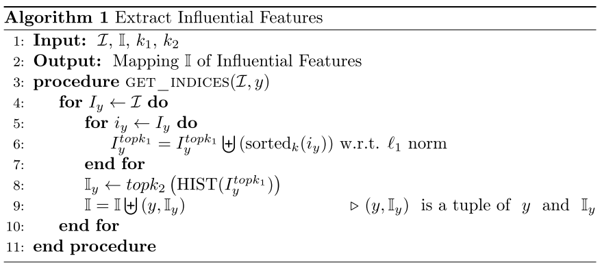

Decomposing the Deep: Finding Class Specific Filters in Deep CNNs¶
论文：https://arxiv.org/abs/2112.07719
代码：https://github.com/akshaybadola/decomposing-the-deep
摘要¶
我们分析了深度卷积网络的最后一层和倒数第二层，并提供了一种有效的方法来识别对网络类别决策贡献最大的特征子集。
我们证明，与最后一层的维度相比，每个类的此类特征的数量要低得多，因此深度 CNN 的决策面位于低维流形上，并且与网络深度成正比。
我们的方法允许将最后一层分解为单独的子空间，与整个网络的最后一层相比，这些子空间更具可解释性并且计算成本更低。
引言¶
大型网络可以包含数百万 [1]、[2] 到数十亿 [3]、[4] 的参数。 这些模型是高度过度参数化的，事实上，过度参数化对于它们的泛化能力至关重要 [5]、[6]、[7]。 在这种情况下，将任何网络的预测归因于其参数变得极其困难，这导致对网络的理解和可解释性较差。 这些模型缺乏可解释性使得人类很难在危急情况下信任它们，例如医疗诊断或自动驾驶汽车。 诊断和纠正模型本身也变得非常困难。
CNN 的最后一层对可解释性特别感兴趣，因为那里出现的检测器更符合语义概念。 网络的最后一层通过 softmax 将特征投影到决策空间上，其属性对于网络预测的最终标签至关重要
尽管最近在解释和解开神经网络特征方面开展了工作; 在当前的文献中，我们还没有遇到一种有效的方法来识别和排名最后和倒数第二层中的特征，从而分解该层。在这项工作中，我们将重点放在一些流行的CNN架构的最后和倒数第二层。我们说明了这些层的一些性质和这些层相关的特征，并提供了一种有效的方法来分解最终层，从而通过解纠缠产生可解释性，并降低了最终层的计算复杂性。
相关工作¶
张等人 [10] 将可解释性定义为“以可理解的术语向人类提供解释的能力”。 然而，我们让人类来开发通信所需的术语，而是将可解释性定义为一种模型的表示，该模型易于检查、适应和归因。
一个可解释的模型，特别是在我们的案例中是一个可解释的深度神经模型，应该易于检查、易于适应和易于归因。 特别是它应该促进：
- 输入检查和归因：可解释的模型应该允许输入的部分与标签之间的对应关系。 为此目的，可以简化对应关系。 例如，在图像中，可以过滤对分类贡献更大的对象部分以进行检查和归因。
- 特征归因：可解释的模型应该允许输入到标签的中间表示之间的对应关系。
- 参数属性：一个可解释的模型应该允许模型的参数和输入标签决策过程之间的对应关系。 也就是说，哪些参数作用于输入的哪些部分以产生哪些标签应该是显而易见的。 同样，为了简化，可以减少归因的此类参数和输入部分的数量。
对于任何模型，解释都应该导致模型参数对它做出的预测的某些归因。 这与将网络提炼成更可解释的模型（如决策树 [11]）是分开的，决策树 [11] 更倾向于将模型转换为更简单的模型，同时允许显着的准确性损失。 然而，模型解释（以及随之而来的简化）并不试图显着改变模型，而是在很大程度上试图保持模型的准确性。
在 CNN 的上下文中，我们可以根据部分图像和作用于它们的滤波器组来解释它们； 因为深度 CNN 包含一个接一个堆叠的卷积滤波器组。 这些提供图像信号的局部线性加权平均的滤波器可以被认为是可解释性的，因为它们不是单独的权重，而是串联在输入和中间表示上。
CNN 可解释性¶
在深度 CNN 中检查和迁移过滤器有足够的先前工作。 详细的调查在[10]中给出。 早期的工作如 [12]、[13]、[14] 分析了中间层中的过滤器，发现来自预训练神经网络的特征可用于其他任务。
后来的工作更多地转向类属性和将特征与语义概念对齐。 Gonazelz-Garcia 等人。 [15] 和鲍等人。 [16] 分析了 CNN 的激活图，发现网络的最后一层比更适合检测纹理和颜色的早期层更接近语义概念。
Network Dissection [16] 试图将 CNN 的激活图与语义概念相关联。 巴赫等。 人。 [17] 引入了相关传播的概念，并将图像中单个像素的贡献可视化。 亨德里克斯等。 人。 [18] 使用基于强化学习的损失函数来提供模型预测的自然语言解释。 Guillame 和 Bengio [19] 在每一层集成单独的线性分类器，以了解模型的决策过程。 张等。 人。 [20] 构建特定于零件的模板，并在 CNN 的训练期间将其合并以生成可解释的特征图。 梁等。 人。 [21] 使用稀疏性来找出 CNN 中的重要滤波器，尽管他们没有像 dropout 或量化 [22] 那样走向参数级稀疏性，而是将一个卷积滤波器视为单个参数。 其他一些方法，如 [23] 和 [24] 试图通过将滤波器建模为图形模型来估计滤波器的贡献。 [25]、[26] 中描述了类激活图的概念。 它试图识别 CNN 的判别区域，而 [27] 和 [28] 旨在对模型解释进行语言描述。
一项平行的调查研究了 CNN 和稀疏 CNN 中的特征重要性。 刘等。 人。 [29] 在预训练的 CNN 中使用稀疏的低秩分解。 李等。 人。 [30] 使用 L1 正则的过滤器将卷积过滤器作为一个整体进行排名，并修剪不太重要的过滤器。 库马尔等人。 [31] 还使用带有上限的L1 范数来将 CNN 分类制定为类似套索的问题。 林等人。 [32] 引入了结构化的稀疏正则化。 李等人。 [33] 引入了一种核稀疏性和熵 (KSE) 度量，它可以量化卷积核的稀疏性和多样性。
Wang 等人探讨了类特异性的概念。 [34]。 他们试图通过捕获特定类别的判别补丁的过滤器来提高准确性。 这些特定于类的过滤器与江等人的早期工作密切相关。 [35]，他们引入了标签一致神经网络的概念来学习他们声称减轻梯度消失并导致更快收敛的特征。 梁等人。 [21] 尝试使用稀疏性来找出他们声称也是特定于类的重要过滤器。
我们的工作从 [30]、[34] 和 [21] 中汲取灵感。 我们结合了类特异性 [34]、[21] 和基于 L1 范数的过滤器重要性 [30] 的思想，得出了一种在最后一层和倒数第二层基于 L1 范数重要性标准来识别 k 个最有影响力特征的方法 CNN，并通过在各种 CNN 上的实验证明其有效性。
本文贡献¶
1.我们证明，每个类别只需要几个过滤器就可以决策。
2.我们提供了一种算法，用于从具有单个完全连接层的任何预训练网络中获取那些过滤器。
3.我们演示了cnn中深度与滤波器解纠缠之间的关系，并表明更深的网络会导致最终层中的低维表示。
4.我们证明这些过滤器与图像中的对象具有更大的对应关系，并且对于该类的分类至关重要。
背景¶
如前所述，CNN 中的特征和层数之多使得它们很难解释。 一种解释它们的方法是过滤器解缠结。 Filter Disentanglement 指的是 CNN 中的过滤器应该代表不同的概念。 由于网络中的概念难以识别，我们可以改为使用过滤器对标签预测的归因作为解缠结的替代度量。 理想情况下，每个过滤器都应该负责检测图像中的特定模式，但这在实践中是困难的。 特别是在底层，过滤器高度纠缠并学习非常通用的特征[16]。 随着我们在网络中向上移动，在顶层，它们的纠缠度往往会降低，但并非完全如此。
有影响的特征¶
倒数第二层和最后一层对神经网络中的特征属性特别感兴趣，因为它们包含图像的最终表示并直接导致标签的预测，而较低层学习响应纹理和较低级别特征的滤波器[16]。在这里，我们描述了确定最后一层中的影响特征的各种因素。
重要特征的L1正则¶
以前 [30] 和 [21] 都使用 L1 范数来估计过滤器的重要性。然而，诸如上述两个的早期作品并没有明确地发现低维决策面。在 [30] 和 [21] 之后，我们将每个类别的结果特征的 L1 范数视为主要的区分因素。
一种方法是检查最终层和预最终层中权重的L1范数，类似于[21]。然而，我们可以注意到，对于每个类，权重的L1范数不会变化，因此很难用它来识别类特定的特征。
我们做出的另一个关键观察是，由于 RELU，整个 CNN 中的所有特征都≥ 0。实际上，特征向量/张量是半正定的，这意味着每个特征的 L1 范数直接有助于最后一层的分类输出。另一方面，权重大约为 50% ≥ 0 和 50% ≤ 0，因此用 L1 范数来量化特征重要性比权重重要性更容易。
分离输出¶
我们的第二个见解是，每个类的最终层输出是该类的特征和该类的权重之间的点积的结果。 因此，最后一层可以被认为是 c 个单独的点积，其中 c 是类的数量。 因此，为每个类选择某些特征不会影响另一个类的输出。
关注全连接层的权重，每一行相当于跟类别 \(i\) 相关的权重
找相关特征¶
我们注意到，找到特定于类的影响特征 \(\mathbf w_{k,i}\) 并非易事，因为权重的确切子集不容易知道，并且穷举搜索具有指数复杂性。 然而，正如我们在 4.1 节中提到的 L1 正则可以帮助我们引导正确的过滤器集。
在我们的实验中，我们发现虽然按 top L1 范数选择权重会导致权重归因，但不会导致特定类别的特征归因。 相反，使用 L1 范数搜索每个类的 topk 特征会给我们带来更好的结果。 即使将每个类别的 topk 过滤器与 topk 权重相结合，也会导致比每个类别的 topk 特征更差的结果。
但是，一个问题是每个实例的特征在单个类中有所不同，并且无法提前知道实例的标签。 然而，从给定类中所有实例的 topk 特征直方图中选择的 topk 大多集中在几个点周围，这对应于这些有影响力的特征。
算法细节¶

在这里，我们讨论从预训练的 CNN 中获取每个类的 k 个最有影响力的特征的算法
\(\mathcal{I}\) 是最后一层所有类别的特征集。
定义 \(I_{y}\) 是类别 y 的特征集。我们想学习一个 \(y \rightarrow I_{y}\) 的映射 \(\mathbb{I}\)，也就是说，\(\mathbb{I}(y)\) 会给出类别 \(y\) 最有影响力的特征。
我们通过在 pre-final 层的每个类的每个数据实例的 L1 范数来记录前 k1 个特征，并为类 y 选择一组 索引 \(I^{topk_{1}}_{y}\)。 我们设置 k1远小于m，其中 m 是 pre-final 层的特征维度（因此也是最后一层的维度）。
然后我们对每一个类，统计索引的频次，然后取 k2 个频数最高的。
实验¶
我们整体观察到，通过减少最终层的输入特征数量来降低维度也会导致准确性降低。 这是可以预料的，因为我们在最后一层丢失了信息。 我们注意到，即使 k2 = 3，我们也能得到 84.16 的准确度，这对于每个类只有 3 个过滤器来说已经相当不错了。 这证实了决策表面位于比最终层的维度低得多的维度子空间上。
我们可以注意到的另一件事是，对于给定的 k1 值，通过设置 k2 = k1 可以获得最佳结果。 此外，如果初始滤波器选择 k1 非常大，那么与较低的 k1 相比，等效的 k2 设置会导致较低的性能。
使用有影响的特征进行预测的计算成本也较低，因为预测一个类只需要几个过滤器。 由于明确的类特定过滤器的识别，我们可以将最后一层分解为特定于类的子空间。 然后可以重新训练网络以恢复原始精度。 对于 Resnet20 和 CIFAR-10，精度下降到 88.59，具有影响的特征 k1 = k2 = 5。之后，我们可以分解最后一层，使每个类都有一个单独的特征子空间。 经过一个 epoch 的训练，我们得到了 91.51 的准确率。
总结¶
我们在这里描述了一种新方法，用于识别 CNN 最终层的 k 个最有影响力的特征。 该方法使我们对 CNN 具有更大的可解释性，并将最终层分解为单独的特定于类的最终层。 我们已经证明，这些特征对于给定标签的分类是必不可少的。 我们还表明，更深的网络在最终层中固有地具有更多解开的表示。 最后，我们还提供了实验的实现和分解的最终层计算。